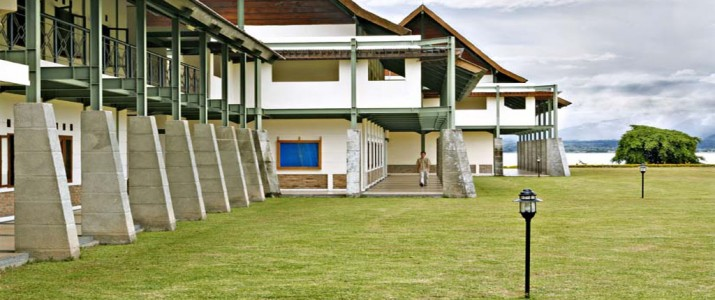
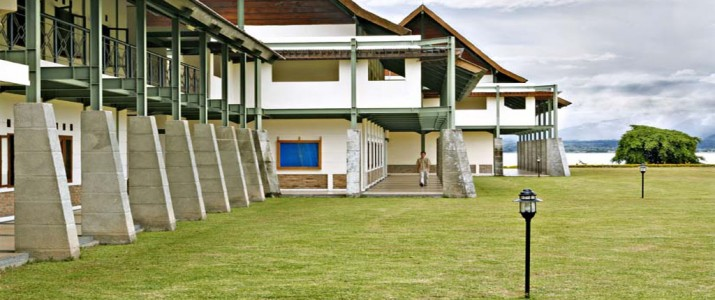

Fasilitas
Fasilitas laboratorium komputasi dimaksudkan sebagai sarana kerja, pendidikan, penelitian maupun pengabdian pada masyarakat. Kepada para pengguna diharapkan pengertian dan kesadarannya untuk menjaga keutuhan dan keamanan peralatan yang ada, serta berperan dalam menciptakan suasana akademik yang lebih berhasil guna. Kesadaran ini hendaknya diterapkan terhadap semua peralatan sarana dan prasarana yang dimiliki oleh Institut Teknologi Del dan semua sistem komputasi lain yang dapat diakses melalui jaringan komunikasi yang tersedia
Institut Teknologi Del (IT Del) menyediakan fasilitas perumahan untuk dosen dan staf penunjang di lingkungan kampus. Dengan tinggal di lingkungan kampus, seluruh dosen dan staf bisa memberikan kontribusi terbaik untuk kelancaran dan kualitas proses akademis dan non-akademis di IT Del. Dengan lingkungan dan fasilitas yang ergonomis, diharapkan juga dosen bisa mengembangkan diri secara lebih maksimal. Beberapa tipe perumahan yang tersedia untuk dosen dan staf (setiap bangunan di beri gambar):>
Perpustakaan Politeknik Informatika Del (PI Del) berdiri sejak tanggal 9 Januari 2002 dengan sistem pelayanan open acces (terbuka). Selanjutnya berubah nama seiring dengan berubahnya status Politeknik menjadi Institut sejak tahun 2013. Perpustakaan berganti nama menjadi Perpustakaan Institut Teknologi Del. Perpustakaan Institut Teknologi Del memiliki fungsi utama yaitu fungsi pendidikan. Pengadaan koleksi dan pengembangan minat baca internal dan eksternal Institut Teknologi Del dilakukan sebagai bagian dari kegiatan diseminasi kegiatan peningkatan minat baca.
IT Del memiliki beberapa sarana hiburan yang dapat digunakan dosen, staf dan mahasiswa IT Del, antara lain: Meja Bilyard Televisi (di Entrance Hall dan kantin) Alat music (drum, gitar, organ, keyboard, gondang)
Praktek umum dokter Del resmi didirikan pada bulan Mei tahun 2009, terletak disamping pintu masuk ke area kampus Institut Teknologi Del. Tujuan didirikan praktek umum ini yang terutama adalah untuk melayani siswa, mahasiswa, pegawai Del tetapi selain itu juga untuk melayani masyarakat disekitar lingkungan kampus. Praktek umum ini bersifat sosial, non-profit, tetapi juga tetap berusaha menjaga mutu pelayanan agar sesuai dengan standar pelayanan termutakhir. Praktek umum ini juga bekerja sama dengan Jamsostek sebagai PPK I untuk melayani pasien-pasien yang terdaftar sebagai tanggungan Jamsostek dalam wilayah ini. Praktek umum ini bisa melayani pengobatan dasar (meliputi anak dan dewasa) hingga yang membutuhkan tindakan bedah sederhana. Di dalam praktek umum ini juga sudah tersedia obat sehingga tidak perlu membeli obat lagi di tempat lain. Saat ini praktek umum ini sedang dalam proses pengembangan menjadi klinik Yayasan Del.